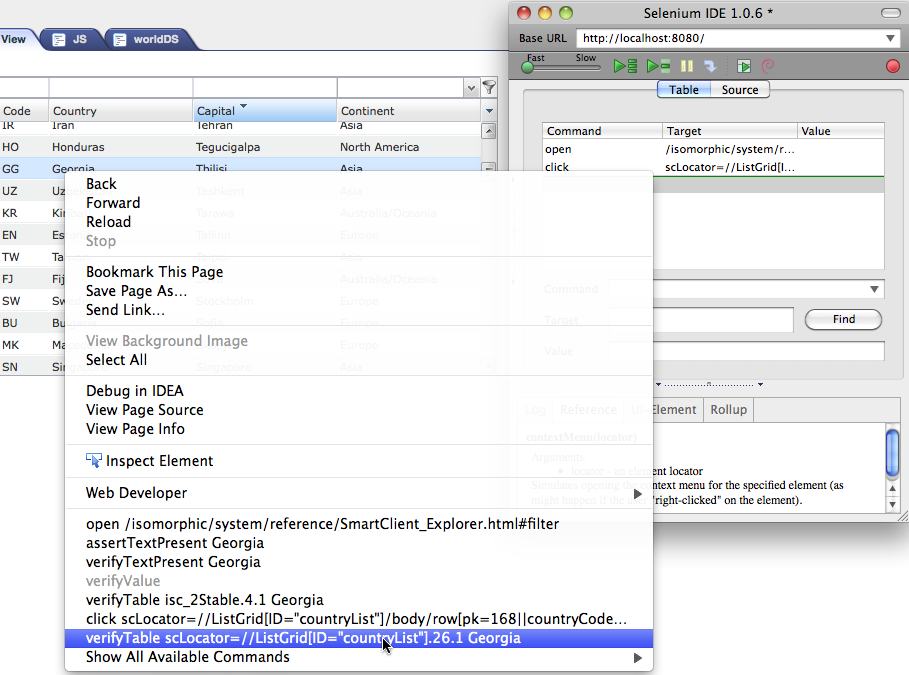

Selenium is a powerful and popular tool which can be used to test your SmartClient applications. Selenium executes tests against your running application in a browser emulating user interaction and asserting various conditions. Selenium provides a record/playback tool for authoring tests without learning a test scripting language. You must be familiar with Selenium and use of Selenium IDE before proceeding. Refer to the documentation on the Selenium site.
Use of Selenium with SmartClient applications is no different than using Selenium to write and run test cases with any other application with the exception on on caveat. Selenium supports the concept of Locators in order to specify the element you'd like a given Selenium command to operate on. For example Selenium supports XPath based locators, and DOM ID based locators. XPath based locators are extremely fragile due to complexity of certain highly nested DOM elements you need access to combined with the fact that XPath support varies across browsers and so your tests might not work across different browsers.
SmartClient occasionally renders a different DOM structure depending on the browser for performance for rendering the UI such that it appears identical across various browsers. As a result using DOM ID or DOM XPath based locators with SmartClient applications is not advisable. Instead SmartClient supports a new Selenium locator which is an xpath-like string used by Selenium to robustly identify DOM elements within a SmartClient application. SmartClient locators for Selenium are prefixed by "scLocator=" and have a readable XPath like value even for cells in ListGrid's or TreeGrids. Typically these locators will not be hand-written and are generated by Selenium IDE, Selenium's test recording tool. One primary locator is based on the ID of the SmartClient widget and has the syntax ID=<Canvas ID>. This simplifies the task of writing tests if you know the ID of the Canvas. For reference, the scLocator syntax for ListGrid cells and DynamicForm FormItem"s can be found at the end of this document.
That's it, we're done configuring the environment.
Note: Tests recorded using Selenium IDE can be played back using Selenium Remote Control The user-extensions-ide.js file is not required for playback of SmartClient-aware tests using Selenium RC, but the user-extensions.js file will be. Instructions for using user-extensions.js with Selenium RC can be found here
Once you have your application running in Firefox, open Selenium IDE from the Tools ==> Selenium IDE menu option. If the Selenium IDE is in record mode, then clicking or carrying out other operations like typing in a text field with automatically record the appropriate Selenium commands with the SmartClient locator. There's no need for you to manually enter the locator, the recorder does this for you! Sometimes users many want finder grain control of what Selenium command is created instead of having the Selenium IDE recorder do this automatically. For example if you want to verify the value of a particular cell in a ListGrid. Instead on typing in the command "verifyTable" and manually enter the SmartClient Locator (scLocator), you can simply right click on the table cell or any other SmartClient widget and the most suitable Selenium commands will appear in the context menu along with the scLocator path for the clicked element. See image below.

This example is the data element (text entry box) for a text field